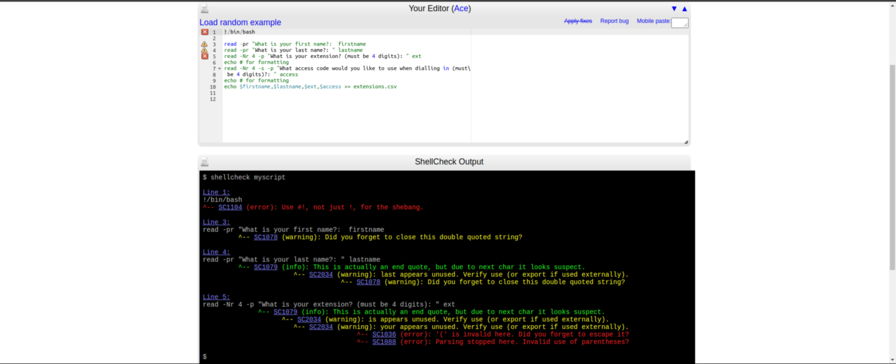
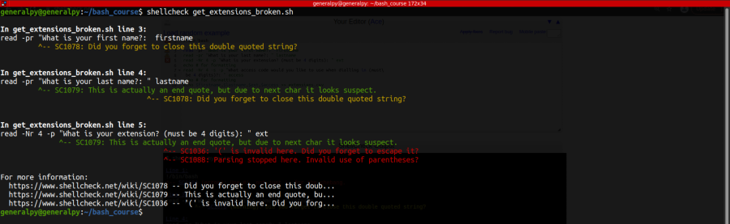

Debugging scripts is important so that we can ensure that our script works perfectly.
Shellcheck is a command line utility and web based utility which is used to debug shell scripts effectiely.
Shellcheck has both web based and command line interface.
Web interface is located at www.shellcheck.net and command line utility must be installed.
Shellcheck not only provides error correction, it also provide suggestions for you scripts.

Shellchecks checks for errors at same line which they occur and then report them to the user. After all errors are resolved, shellcheck will provide suggestions if any.

Broken script used here is :
#!/bin/bash
read -pr "What is your first name?: firstname
read -pr "What is your last name?: " lastname
read -Nr 4 -p "What is your extension? (must be 4 digits): " ext
echo # for formatting
read -Nr 4 -s -p "What access code would you like to use when dialling in (must be 4 digits)?: " access
echo # for formatting
echo $firstname,$lastname,$ext,$access >> extensions.csv
Shellcheck is however has 1 limitation, it doesn't know what environment your code is running in. It will not check if a file or folder exists, it will not check if permissions are correct, it will not check if all tools used in a script are installed or not etc.